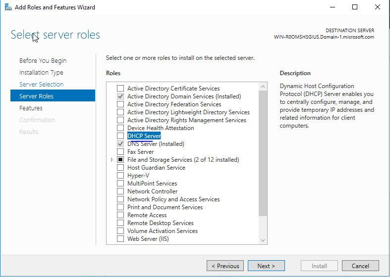
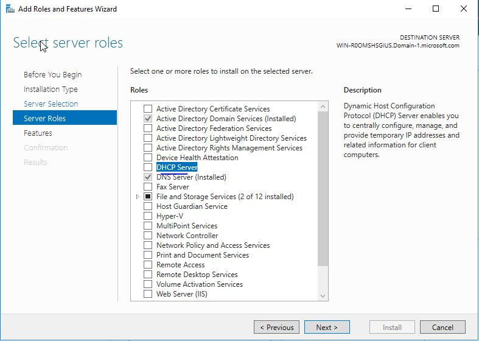

2. Confirm that a Forward Lookup Zone exists for your domain (e.g., Domain-1.local)

3. This zone contains A records used for domain authentication

Windows Server Roles are predefined sets of software features built into Windows Server that allow the server to perform specific network services and infrastructure functions. Each role defines what the server does — for example:
In a lab environment, assigning and configuring these roles lets you simulate real-world IT infrastructure, enabling hands-on learning in areas like domain management, policy enforcement, and network services deployment — all from your VirtualBox-based Windows Server instance.
Before setting up Active Directory, two critical services must be configured: DNS and DHCP.
This lab goes into configuring both on the same Windows Server that will later function as a domain controller.
Active Directory depends on DNS to locate domain controllers and services. DHCP simplifies network management by assigning the correct IP and DNS settings to domain-joined computers.
1. Verify DNS Installation
Typically the first step would be to install the DNS Server Role, however, in this example that is already installed. So we'll verify the installation in this step.
2. Confirm that a Forward Lookup Zone exists for your domain (e.g., Domain-1.local)
3. This zone contains A records used for domain authentication
1. Click the Add roles and features in Server Manager. 2. The installation wizard will come up to follow the prompts. 3. For this example, I'm selecting Role-based or feature-based installation.


Configuring DHCP
Install the DHCP Server Role


 



DHCP Authorization


Create a DHCP Scope


Verification
Back to Home